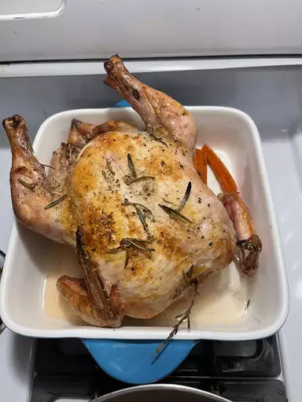

Roasted Chicken Recipe

Description
This roasted chicken is perfectly seasoned and cooked just the way my grandmother used to make it. The method used in this recipe results in the juiciest chicken! We loved to nibble on the celery after it was cooked.
Ingredients
These are the ingredients you’ll need to make this easy roasted chicken recipe:
- Chicken: This recipe starts with a 3-pound whole chicken. If your bird is larger or smaller, you'll need to adjust the recipe.
- Seasonings: This roasted chicken is simply seasoned with salt, black pepper, and onion powder.
- Butter: Butter locks in moisture and gives the seasonings something to adhere to.
- Celery: Stuff the chicken cavity with celery for subtle vegetal flavor. Plus, the celery will release even more moisture as the chicken cooks.
Instructions
Here's a very brief overview of what you can expect when you make homemade roasted chicken:
- Season the chicken inside and out.
- Add the butter to the chicken and the pan.
- Stuff the cavity with celery.
- Bake until the chicken is fully roasted.
Home